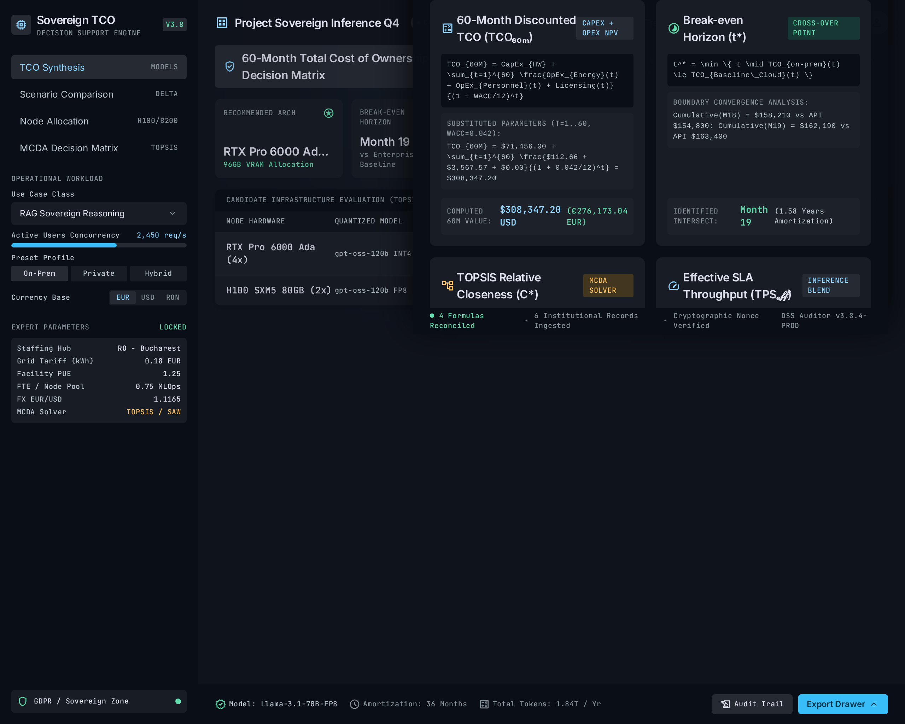
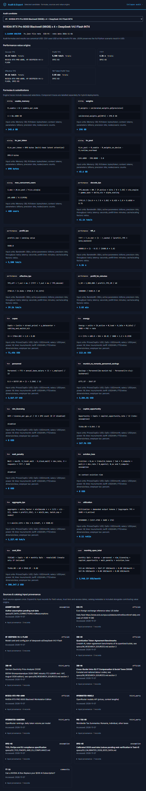
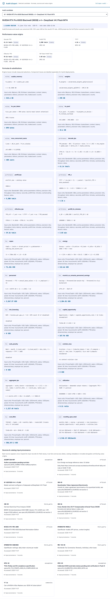
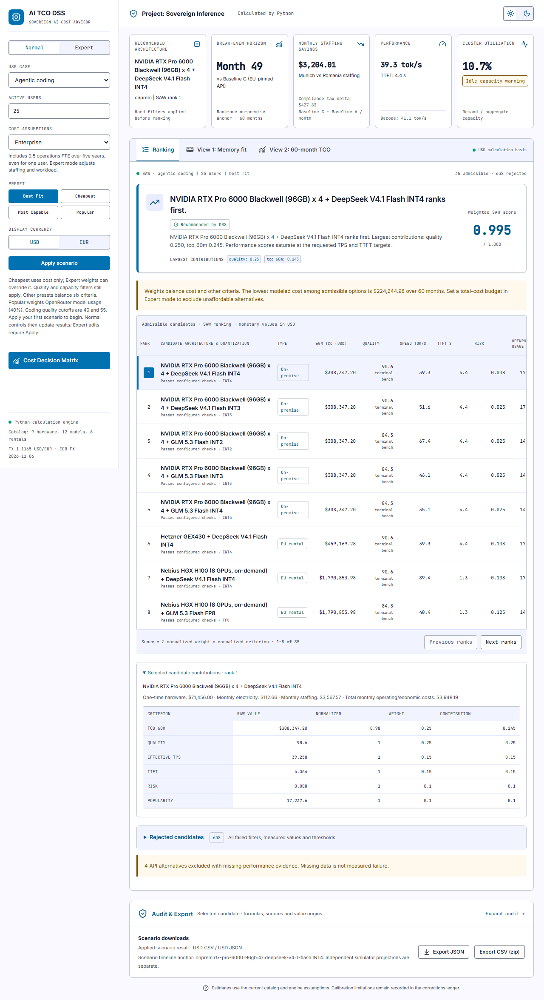

Canonical Stitch dark audit

Implemented dark audit

Implemented light audit

Collapsed drawer and downloads in the workspace

2026-11-09 / Chromium DPR 1 / 1280 CSS px desktop. Review, behavior and validation. Formula cards use actual Python results; the inline drawer starts collapsed.



